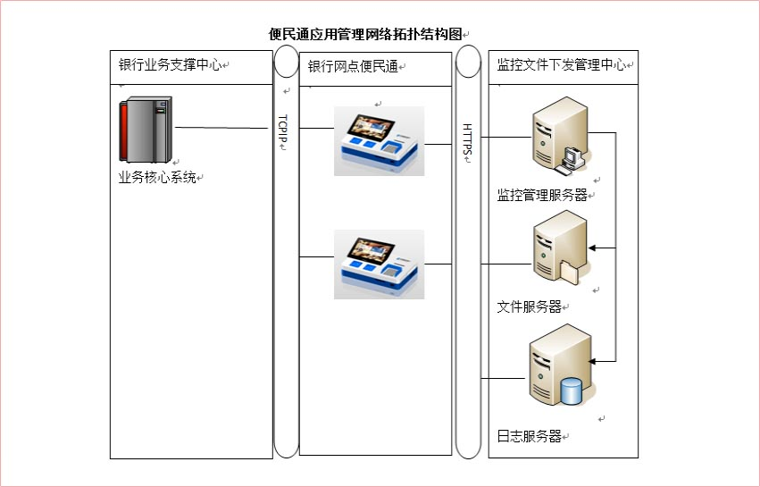
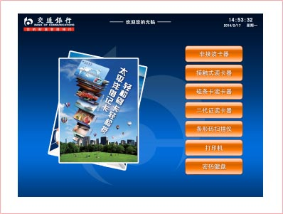
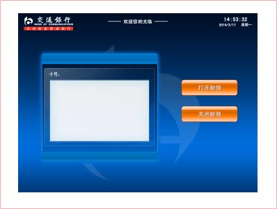
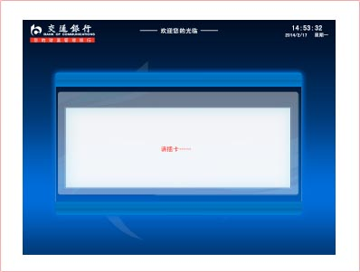
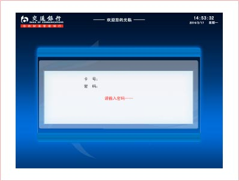
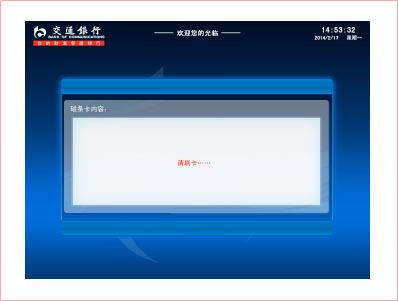
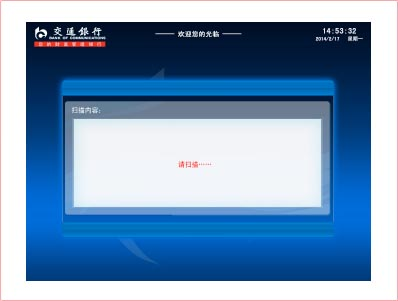
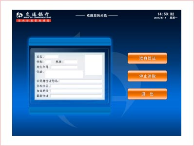
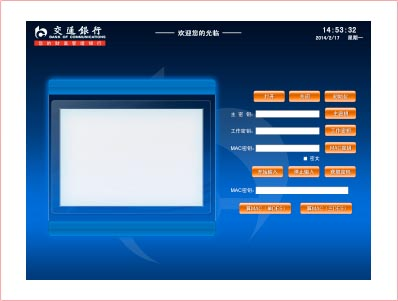

系统特点
便民通的管理以及操作是面向大众的，公众可以使用PAD终端进行网银、缴费等活动，银行管理人员则通过PAD对网点内或者区域内所有的终端系统通过管理平台进行有效、实时的监控和管理里，能有效提高工作人员的工作效率并降低银行的运营成本。
便民通产品是高集成、直观易用、互动性强的高科技产品，产品外观精制、大方，符合中国人审美观点，产品表面LOGO可根据要求定制丝网印刷，布放在营业厅内既可以成为便民的工具，也可以成为装点的一部分。整个设备采用ABS塑料制造，质地轻便、安全性更强，表面无拼接，完全是一体化。功能上更是具备高度集成，将触摸输入、银行卡读取、密码输入、凭条打印等整合在一起，完全满足实现交行要求的查询、转账、签约、缴费等非现金银行服务。并且便民通产品利用最前沿的3G\wifi技术实现信息的互通传输。便民通产品更注重在安全性，可靠性方面的力度要求，产品外观、结构、电气设计满足《GB/T 18789.1 自助设备通用规范》、《GB9254信息技术设备的无线电骚扰限值和测量方法》、《GB4943信息技术设备安全》等国家相关规范。
- 融合性更强
便民通产品从外观到工艺，再到细节加入更多对融合性的考虑。不仅可以满足搭配银行实体营业厅环境，方便客户使用。也可以独立使用，只要接入3G网络或wifi即可。 - 电气安全性
便民通产品严格按GB4943-2001信息技术设备的安全标准设计。
便民通产品采用适配器为整机供电，具备过流、过压保护功能。 - 物理安全性
产品外壳采用塑料开模制造，防火，抗冲击，防暴力强度高，不易变形，从强度上保证了设备的安全；
产品表面光滑、曲率（弯曲度）正常，没有拼接痕迹，散热孔隙宽度均匀，无毛刺，不会对使用者造成物理性伤害。 - 信息安全性
便民通产品操作介质采用的联想品牌PAD，抗震性好，发热低，故障率低，能够充分保证信息数据的安全。 - 性能稳定
便民通产品设计从调研、开发、制作、评审等各个阶段都经过严格的拷机测试。
产品经过7×24小时不间断工作测试，产品未出现停机、死机、整机过热、模块报停的故障。
-
核心功能
演示软件首页
 -
演示软件非接读卡器界面

打开界面后，将非接触IC卡放置在读卡部位，点击“打开射频”按钮，左侧对话框内正确显示非接IC卡数据信息。 -
演示软件接触式

IC卡读卡器界面 -
将IC卡插入读卡器后，界面将显示该卡卡号。

输入密码后，界面显示用户信息正确。 -
演示软件磁卡读卡界面

刷卡后，界面显示3磁轨数据正确。 -
演示软件条码扫描界面

此时条码扫描仪开启，扫描条码后，界面中显示所扫条码的信息。 -
演示软件二代证读取界面

扫描二代证后，左侧对话框将显示正确的用户信息，测试成功。 -
演示软件密码键盘读取界面

便民通设备配有主流杀毒软件、防火墙等计算机安全软件，已经通过交行技术管理部门认可。
便民通设备配有全盘镜像ghost及快速恢复工具。

联想移动互联解决方案
联想移动互联解决方案以最终用户的体验为出发点，借助移动互联、大数据分析、云计算等创新技术，通过业务流程的再造，实现了企业资源的合理规划和高效运转。
联想在移动互联领域，通过梳理客户业务流程，整合行业专业应用软件，针对客户的行业特质以及业务需求进行深度定制，目前已储备超过200余项专业解决方案。更多解决方案以及产品、案例、咨询信息，请通过以下入口进入（ID:Lenovomia）：